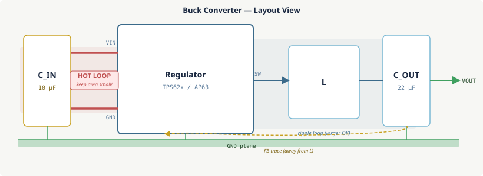

18 · Power & Thermal
Power design is inseparable from PCB layout. A switching regulator that
simulates perfectly in SPICE can generate widespread noise on a physical
board if the layout is poor. A component that meets its datasheet power
budget can overheat and fail if the thermal path from die to ambient has
too much resistance. This lesson covers the layout rules that make power
conversion clean, and the thermal model that tells you whether an IC will
survive its operating conditions.
Switching Regulator Basics
A buck converter (step-down) uses a high-frequency switch
(typically 200 kHz–4 MHz) to chop the input voltage into pulses, which an
LC filter averages into the output voltage. When the switch is on (duty
cycle D), energy is stored in the inductor; when the switch is off, the
inductor freewheels current through a catch diode (or synchronous FET).
Output voltage V_OUT ≈ D × V_IN in continuous conduction mode.
A boost converter (step-up) works in the opposite sense:
energy is stored in the inductor when the switch is on (inductor connected
from V_IN to GND); when the switch is off, the inductor voltage adds to
V_IN to charge the output capacitor above V_IN.
What makes switching regulators layout-sensitive is the rate of
change of current. At a 1 MHz switching frequency with 1 A load
current switching on in 10 ns, dI/dt = 1/10e-9 = 100 MA/s. Any
inductance L in the loop generates a voltage spike V = L × dI/dt.
1 nH of parasitic inductance from a long trace produces 100 mV of ringing
— enough to cause conducted and radiated emissions.
The Hot Loop
The hot loop is the current loop that carries the full
switching transient. In a buck converter, it consists of:
- Input capacitor (+) → high-side switch (PFET or NFET) → switching node (SW)
- SW → low-side switch (or catch diode) → input capacitor (–)
This loop carries the discontinuous switching current — it switches from
full load current to zero and back at the switching frequency. The area
enclosed by this loop is the primary source of radiated EMI from the
converter. Minimising the hot loop area is the single most
important layout rule for switching regulators.

The hot loop (red, shaded) — input cap to regulator — must be as small as possible. The inductor and output cap form a larger ripple loop where EMI is less critical.
Buck / Boost Layout Rules
- Place C_IN directly at the regulator's VIN and GND pins. The input capacitor should be the physically closest passive component to the IC. A C_IN placed 5 mm away doubles the hot loop area and nearly doubles the conducted/radiated noise. On the EFR32 board with an on-chip switcher (DCDC), C_IN goes on the same side of the board as the DCDC pins with trace length <1 mm.
- Minimise hot loop area. CIN(+) → VIN pin → internal switch → SW pin → and back to CIN(–) via GND. This path should form the smallest possible rectangle. Shorter, wider traces reduce inductance. Vias in this path add 0.5–1 nH each — avoid layer transitions inside the hot loop.
- Place the inductor close to the SW node. The SW node is the highest dV/dt point on the board. Keep the trace from SW to the inductor short. The inductor itself generates a magnetic field — orient it so its field does not couple into sensitive analog traces (typically, orient with the winding axis perpendicular to nearby signal traces).
- Route the feedback trace away from the inductor. The feedback divider from VOUT to the FB pin carries a tiny signal that the regulator uses for output voltage control. Any noise coupled into FB modulates the output voltage. Route FB on the quiet side of the regulator, away from SW and the inductor.
- Solid GND plane under the switching section. No slots, no interruptions under the switcher footprint. The GND plane completes the hot loop return path; any gap increases loop area.
- Boost converter: same rules, different topology. For a boost converter, the hot loop is from VIN/GND capacitor through the switch to the inductor and back — identify the discontinuous current loop and minimise its area. The output node is on the anode side of the catch diode, which is comparatively quiet.
Power Delivery Network (PDN)
The power delivery network is the complete electrical
path from the voltage regulator's output to each IC's VDD pin. Every
element of this path — traces, planes, vias, capacitors — has impedance,
and that impedance determines how much the supply voltage droops during a
transient load step.
The target impedance concept: for a maximum allowed supply droop of
ΔV under a step load change ΔI, the PDN impedance must satisfy:
$$Z_\text{target} = \frac{\Delta V}{\Delta I}$$
Example: 3.3 V supply, 5% droop limit, 200 mA load step from an MCU waking from
sleep. $\Delta V = 0.05 \times 3.3\,\text{V} = 165\,\text{mV}$,
$\Delta I = 200\,\text{mA}$, giving
$Z_\text{target} = 165\,\text{mV} / 200\,\text{mA} = 0.825\,\Omega$.
The PDN impedance must stay below 825 mΩ across the relevant frequency range.
Achieving low PDN impedance across frequency requires a capacitor cascade:
different capacitor values resonate at different frequencies, and combining
them provides low impedance across a wider bandwidth.
- Voltage regulator (DC–10 kHz): the regulator's feedback loop provides low impedance up to its bandwidth (typically 50–200 kHz). Bulk capacitors at its output extend coverage.
- Bulk electrolytic / tantalum (10 kHz–1 MHz): 10–100 µF placed near board power entry. Self-resonates around 100 kHz–1 MHz.
- Local ceramic bypass (1–100 MHz): 100 nF X7R at each VDD pin (self-resonates at 10–30 MHz for 0402). Discussed in Lesson 16.
- Power/ground plane capacitance (>100 MHz): the parallel-plate capacitance of the GND/PWR plane pair (typically 50–200 pF/cm² for 0.1 mm dielectric spacing) provides ultra-high-frequency bypassing with essentially zero inductance.
Thermal Model
Heat flows from the IC's die (junction) to the ambient air through a series
of thermal resistances, exactly analogous to an electrical resistor network.
The thermal resistance θ is defined as the temperature rise per watt of
power dissipated: θ [°C/W].
Thermal resistance is analogous to electrical resistance: power (current) flows through series resistances, creating temperature drops (voltage drops) at each stage.
θ_JC (junction-to-case) — fixed by the IC package; found
in the datasheet. A well-packaged IC with exposed thermal pad may have
θ_JC = 2–5°C/W. A small SOT-23 might have θ_JC = 40–100°C/W.
θ_CS (case-to-board) — the interface between the package's
thermal pad and the copper beneath it. Primarily determined by solder joint
quality and copper area. For an exposed-pad IC soldered correctly to a
copper pour with vias: θ_CS ≈ 1–5°C/W. For a package resting on a
solder mask with poor thermal contact: θ_CS can be 20–50°C/W.
θ_SA (board-to-ambient) — depends on board copper area,
orientation (vertical boards convect better), airflow, and whether a
heatsink is used. Larger copper pour area reduces θ_SA by providing more
surface area for convective and radiative cooling.
Thermal Pads & Copper Pours
Most modern power ICs (LDOs, switchers, motor drivers) come in packages
with an exposed pad (also called a thermal slug, EP, or
EPAD) on the underside. This pad is directly connected to the die, and the
primary thermal path is down through the solder joint into the PCB copper.
The exposed pad must be connected to a copper area with thermal vias through
to inner layers.
Thermal vias are the same through-hole vias used for
signals, but placed in a grid under the exposed pad to spread heat into the
inner GND plane. The via drill diameter is typically 0.2–0.3 mm, tented
(covered with soldermask) on the top side to prevent solder from wicking
down and starving the pad joint. A typical thermal via array is a 3×3 or
4×4 grid of vias under the exposed pad.
Do not use thermal relief spokes on exposed pad connections.
Thermal relief — the "asterisk" connection where four thin copper spokes
connect a pad to the surrounding pour — is useful for through-hole
components on large copper pours, where it allows the pad to heat up for
soldering without the pour conducting heat away. For an SMD exposed pad that
is the primary thermal path, thermal relief defeats the purpose. Connect the
exposed pad to the copper pour with a solid connection and as many thermal
vias as will fit.
Copper pour sizing for heat spreading.
The thermal resistance of a 1 oz (35 µm) copper layer is roughly 70°C/W
per square. A square of any size has the same resistance — doubling the
pour area doubles the number of squares only if you're spreading in one
dimension. In practice, a 10×10 mm copper pour reduces θ_SA by 20–40°C/W
compared to having no pour at all, depending on board thickness and
the number of vias to inner layers.
Estimating Junction Temperature
The most important thermal check is confirming that T_J stays below the
maximum junction temperature from the datasheet — typically 125°C or 150°C
for industrial-grade components.
Example 1 — LDO, 3.3 V at 200 mA from 5 V, SOT-223 package
Power dissipated in the LDO:
$$P_D = (V_\text{in} - V_\text{out}) \times I_\text{load} = (5.0 - 3.3)\,\text{V} \times 200\,\text{mA} = 340\,\text{mW}$$
With $\theta_{JA} = 60\,°\text{C/W}$ (datasheet, no copper pour), at 25 °C ambient:
$$T_J = T_A + P_D \cdot \theta_{JA} = 25 + 0.340 \times 60 = 45\,°\text{C}\ \checkmark$$
At 85 °C ambient (industrial worst case): $T_J = 85 + 0.340 \times 60 = 105\,°\text{C}$ — still OK, but only just.
With a 10×10 mm copper pour (effective $\theta_{JA} \approx 35\,°\text{C/W}$):
$$T_J = 85 + 0.340 \times 35 = 97\,°\text{C}\ \checkmark\ \text{— good margin}$$
Always check the worst-case ambient, not 25 °C room temperature.
Example 2 — EFR32MG24 MCU at full Tx power
$I_{CC} = 10\,\text{mA}$ at 3.3 V gives $P_D = 33\,\text{mW}$.
With $\theta_{JA} = 30\,°\text{C/W}$ for QFN-48:
$$T_J = 85 + 0.033 \times 30 = 86\,°\text{C}\ \text{— negligible}$$
Power ICs (LDOs, switchers, H-bridges) need careful thermal analysis; MCUs rarely dissipate enough to matter.
The datasheet typically provides θ_JA under two conditions: JEDEC standard
test board (no copper pour) and with a recommended copper area. Use the
latter when you have a copper pour. If neither condition matches your
design, interpolate or simulate with a thermal calculator.
Worst-case thermal check.
Always evaluate at maximum ambient temperature (T_A_max from the
system specification, e.g., 85°C for industrial), maximum power
dissipation (maximum load current, maximum input voltage), and minimum
copper (fewest layers, smallest board). If T_J < T_J_max at this
corner, thermal is not a concern. If it is marginal, increase copper
area, reduce input voltage headroom, or choose a package with a lower θ_JC.
References
- P. Horowitz & W. Hill, The Art of Electronics (3rd ed.) — Chapter 9 (Voltage Regulation and Power Conversion) covers buck/boost topology, hot loop inductance, and practical switching regulator layout guidance.
- H. W. Ott, Electromagnetic Compatibility Engineering — Chapter 9 (Power Distribution) addresses PDN impedance, target-impedance calculation, and the capacitor cascade strategy (bulk → local ceramic → plane capacitance) covered in the PDN section.
- Silicon Labs, AN0002: EFR32 Hardware Design Considerations — application note covering DCDC switcher placement, recommended hot loop layout, and thermal pad design for EFR32 packages.